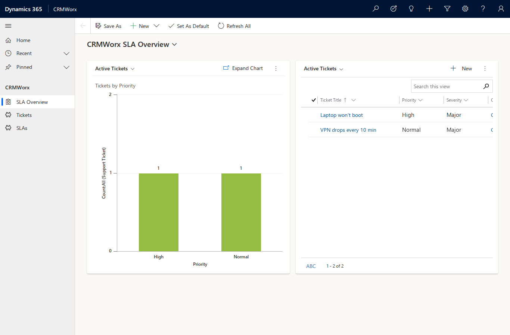
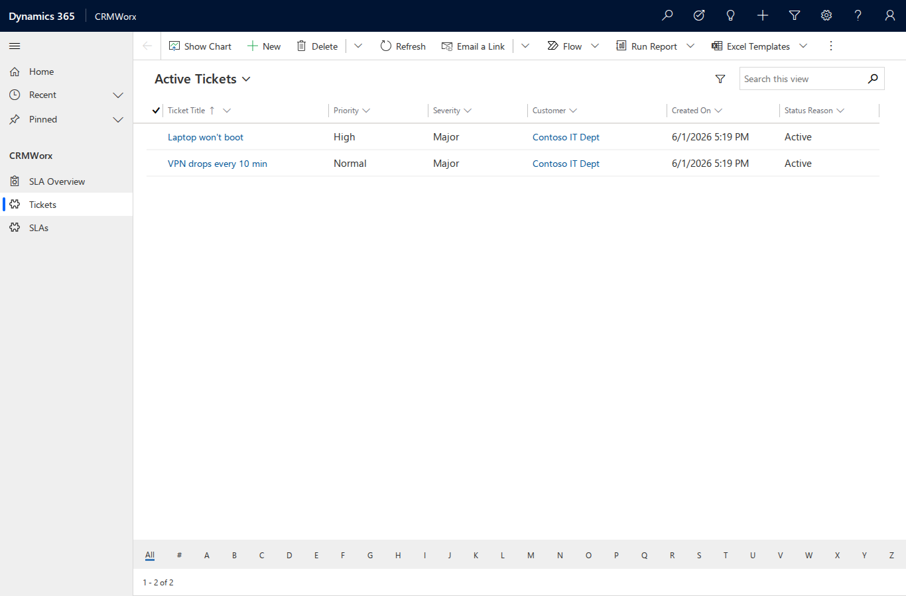
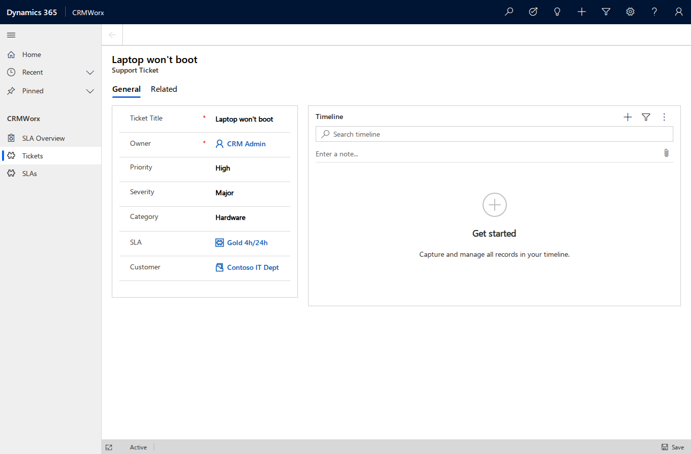

CRMWorx walkthrough
This guide builds CRMWorx — an IT-company ticketing platform with SLA — end to
end using the crm CLI, demonstrating every command group. Each step shows the real
command and its captured output from a live run against a Dynamics 365 CE on-premises
v9.1 server (credentials redacted).
The build order is: option sets → entities → attributes → relationships → seed data → read/verify → package → views → forms → charts → dashboard → BPF → sitemap & app → launch → (optional teardown).
Prerequisites
- A reachable D365 CE on-prem server and NTLM credentials (via
.env:CRM_BASE_URL,CRM_USERNAME,CRM_PASSWORD,CRM_AUTH=ntlm,CRM_API_VERSION). The password is read fromD365_PASSWORD, withCRM_PASSWORDaccepted as an alias — both names work. - A
CRMWorxunmanaged solution and a publisher with prefixcwx. Create both from the CLI — no web UI (#34).--if-exists skipmakes re-runs a no-op:
crm --json solution create-publisher --name crmworx --display CRMWorx --prefix cwx \
--option-value-prefix 30000 --if-exists skip
crm --json solution create --name CRMWorx --publisher crmworx --if-exists skip
With a named profile active, these auto-wire publisher_prefix=cwx and
default_solution=CRMWorx into it, so the metadata commands below target the
cwx publisher and CRMWorx solution by default (pass --no-set-default to opt out).
1. Pre-flight & connection
Confirm reachability and identity. A non-zero exit (e.g. 401) means the
DOMAIN\username credentials are wrong — fix them before continuing.
crm --json connection whoami
{
"ok": true,
"data": {
"@odata.context": ".../api/data/v9.1/$metadata#Microsoft.Dynamics.CRM.WhoAmIResponse",
"BusinessUnitId": "078a426a-8339-f111-b65d-00155d467b90",
"UserId": "f890426a-8339-f111-b65d-00155d467b90",
"OrganizationId": "b948cd5f-8339-f111-b65d-00155d467b90"
}
}
Save a targeting profile so every mutating metadata command lands in the CRMWorx
solution and uses the cwx schema-name prefix by default. connect saves the profile
and validates the credentials with a WhoAmI call (the password is read from the
D365_PASSWORD environment variable, never passed on the command line):
crm --json connection connect \
--url "$CRM_BASE_URL" --username "$CRM_USERNAME" \
--api-version v9.1 \
--default-solution CRMWorx --publisher-prefix cwx \
--profile-name crmworx
{
"ok": true,
"data": {
"ok": true,
"user_id": "f890426a-8339-f111-b65d-00155d467b90",
"api_base": "http://<server>/<org>/api/data/v9.1/",
"api_version": "v9.1"
},
"meta": { "profile": "crmworx" }
}
Verify the active profile resolves the solution and prefix:
crm --json connection profiles
crm --json connection status
{
"ok": true,
"meta": {
"profiles": [
{ "name": "crmworx", "default_solution": "CRMWorx", "publisher_prefix": "cwx" }
]
}
}
connection status confirms active_profile: crmworx with default_solution: CRMWorx
and publisher_prefix: cwx. From here, metadata create-* commands target CRMWorx
automatically (override per-command with --solution, or hard-fail when none resolves
with --require-solution / CRM_REQUIRE_SOLUTION).
2. Metadata build (option sets → entities → attributes → relationships)
2.1 Global option sets
CRMWorx uses four global (reusable) option sets. Preview the request first with
--dry-run to confirm the shape and that the CRMWorx solution is targeted — note the
MSCRM.SolutionUniqueName: CRMWorx header and the GlobalOptionSetDefinitions endpoint:
crm --json --dry-run metadata create-optionset \
--name cwx_priority --display "CRMWorx Priority" \
--option 1:Low --option 2:Normal --option 3:High --option 4:Critical \
--if-exists skip
{
"ok": true,
"data": {
"_dry_run": true,
"method": "POST",
"url": ".../api/data/v9.1/GlobalOptionSetDefinitions",
"headers": { "MSCRM.SolutionUniqueName": "CRMWorx" },
"body": {
"@odata.type": "Microsoft.Dynamics.CRM.OptionSetMetadata",
"Name": "cwx_priority", "IsGlobal": true, "OptionSetType": "Picklist",
"Options": [ { "Value": 1, "Label": { "...": "Low" } }, "...etc" ]
}
}
}
Now create all four. --if-exists skip makes each create idempotent (proven in §5):
crm --json metadata create-optionset --name cwx_priority --display "CRMWorx Priority" \
--option 1:Low --option 2:Normal --option 3:High --option 4:Critical --if-exists skip
crm --json metadata create-optionset --name cwx_severity --display "CRMWorx Severity" \
--option 1:Minor --option 2:Major --option 3:Critical --if-exists skip
crm --json metadata create-optionset --name cwx_ticketcategory --display "CRMWorx Category" \
--option 1:Hardware --option 2:Software --option 3:Network --option 4:Access --if-exists skip
crm --json metadata create-optionset --name cwx_slatier --display "CRMWorx SLA Tier" \
--option 1:Bronze --option 2:Silver --option 3:Gold --if-exists skip
Each returns created: true with the new metadata id, the target solution, and
published: true:
{
"ok": true,
"data": {
"created": true,
"name": "cwx_priority",
"metadata_id_url": ".../GlobalOptionSetDefinitions(a2ca6b21-...)",
"solution": "CRMWorx",
"published": true
}
}
Verify all four landed:
crm --json metadata list-optionsets --custom-only | grep -oE 'cwx_[a-z]+' | sort -u
cwx_priority
cwx_severity
cwx_slatier
cwx_ticketcategory
2.2 Custom entities
Two tables: SLA Policy (organization-owned reference data) and Support Ticket
(user-owned, note- and activity-enabled). The schema name is given in PascalCase with
the cwx_ prefix; the server derives the lowercase logical name and the entity-set
(plural) name used by the Web API:
crm --json metadata create-entity \
--schema-name cwx_SLA --display "SLA Policy" --display-collection "SLA Policies" \
--primary-attr cwx_Name --primary-label "Policy Name" \
--ownership OrganizationOwned --has-notes --if-exists skip
crm --json metadata create-entity \
--schema-name cwx_Ticket --display "Support Ticket" --display-collection "Support Tickets" \
--primary-attr cwx_Name --primary-label "Ticket Title" \
--ownership UserOwned --has-notes --has-activities --if-exists skip
{
"ok": true,
"data": {
"created": true,
"schema_name": "cwx_SLA",
"logical_name": "cwx_sla",
"entity_set_name": "cwx_slas",
"primary_attribute": "cwx_name",
"solution": "CRMWorx",
"published": true
}
}
Note the entity_set_name in each response — cwx_slas and cwx_tickets. These
plural names are what you pass to entity/query commands later (§3–§4), not the
logical name. Verify both tables exist:
crm --json metadata entities --custom-only | grep -oE 'cwx_(sla|ticket)\b' | sort -u
cwx_sla
cwx_ticket
2.3 Attributes (all kinds)
Add columns to both tables. The cwx_sla table gets two integer bounds, a global
picklist, and a boolean:
crm --json metadata add-attribute cwx_sla --kind integer \
--schema-name cwx_ResponseHours --display "Response Hours" --min 0 --max 720 --if-exists skip
crm --json metadata add-attribute cwx_sla --kind integer \
--schema-name cwx_ResolutionHours --display "Resolution Hours" --min 0 --max 2160 --if-exists skip
crm --json metadata add-attribute cwx_sla --kind picklist \
--schema-name cwx_Tier --display "Tier" --optionset-name cwx_slatier --if-exists skip
crm --json metadata add-attribute cwx_sla --kind boolean \
--schema-name cwx_Active --display "Active" --true-label Yes --false-label No --if-exists skip
The cwx_ticket table gets a memo, three global picklists, and three datetimes:
crm --json metadata add-attribute cwx_ticket --kind memo \
--schema-name cwx_Description --display "Description" --max-length 4000 --if-exists skip
crm --json metadata add-attribute cwx_ticket --kind picklist \
--schema-name cwx_Priority --display "Priority" --optionset-name cwx_priority --if-exists skip
crm --json metadata add-attribute cwx_ticket --kind picklist \
--schema-name cwx_Severity --display "Severity" --optionset-name cwx_severity --if-exists skip
crm --json metadata add-attribute cwx_ticket --kind picklist \
--schema-name cwx_Category --display "Category" --optionset-name cwx_ticketcategory --if-exists skip
crm --json metadata add-attribute cwx_ticket --kind datetime \
--schema-name cwx_OpenedOn --display "Opened On" --if-exists skip
crm --json metadata add-attribute cwx_ticket --kind datetime \
--schema-name cwx_ResolvedOn --display "Resolved On" --if-exists skip
crm --json metadata add-attribute cwx_ticket --kind datetime \
--schema-name cwx_DueBy --display "Due By" --if-exists skip
Each returns the created column with its resolved logical name and type:
{
"ok": true,
"data": {
"created": true,
"entity": "cwx_ticket",
"schema_name": "cwx_Priority",
"logical_name": "cwx_priority",
"attribute_type": "Picklist",
"solution": "CRMWorx",
"published": true
}
}
A picklist that references a global option set binds to it through the
GlobalOptionSet navigation property. Confirm the binding by expanding it from the
metadata endpoint:
attr: cwx_priority -> GlobalOptionSet.Name: cwx_priority
Two CLI defects fixed during this step
Building these columns against the live 9.1 server surfaced two add-attribute
bugs, fixed inline (commit cf7d41d):
- Integer bounds were serialized as floats (
--min 0→0.0), which the server rejected for anEdm.Int32column. Integer/bigint bounds are now coerced to integers. - Global picklists were sent as an inline option set with
IsGlobal=true, which the server rejects on attribute create. They now bind viaGlobalOptionSet@odata.bind; on-prem 9.1 requires the option set'sMetadataIdGUID for the bind (theNamealternate key is rejected), so the CLI resolvesName → MetadataIdfirst.
2.4 Relationships (1:N + 1:N + N:N)
Three relationships wire the model together: SLA→Ticket and Account→Ticket (each a 1:N that creates a lookup column on the ticket), and Ticket↔SystemUser (an N:N "watchers" link with an intersect table).
# SLA -> Ticket (creates the cwx_sla lookup on the ticket)
crm --json metadata create-one-to-many \
--schema-name cwx_sla_cwx_ticket \
--referenced-entity cwx_sla --referencing-entity cwx_ticket \
--lookup-schema cwx_SLA --lookup-display "SLA Policy" --if-exists skip
# Account -> Ticket (creates the cwx_customerid lookup on the ticket)
crm --json metadata create-one-to-many \
--schema-name cwx_account_cwx_ticket \
--referenced-entity account --referencing-entity cwx_ticket \
--lookup-schema cwx_CustomerId --lookup-display "Customer" --if-exists skip
# Ticket <-> SystemUser (N:N watchers)
crm --json metadata create-many-to-many \
--schema-name cwx_ticket_systemuser \
--entity1 cwx_ticket --entity2 systemuser \
--intersect-entity cwx_ticket_systemuser --if-exists skip
A 1:N response reports the created relationship and the lookup column the server generated on the referencing entity:
{
"ok": true,
"data": {
"created": true,
"kind": "OneToMany",
"schema_name": "cwx_sla_cwx_ticket",
"referencing_attribute": "cwx_sla",
"solution": "CRMWorx"
}
}
Verify all three (note metadata relationships lists an entity's one-to-many,
many-to-one, and many-to-many links) and publish:
crm --json metadata relationships cwx_ticket \
| grep -oE 'cwx_(sla_cwx_ticket|account_cwx_ticket|ticket_systemuser)' | sort -u
crm --json solution publish-all
cwx_account_cwx_ticket
cwx_sla_cwx_ticket
cwx_ticket_systemuser
Three more CLI defects fixed during this step
Creating relationships against the live server exposed (commits c62d57a,
980ab95):
- Wrong endpoint —
create-one-to-many/create-many-to-manyPOSTed toCreateOneToManyRequest/CreateManyToManyRequest, which are SDK message names, not Web API segments ("Resource not found for the segment ..."). They now POST to theRelationshipDefinitionsentity set with an@odata.typediscriminator (the 1:N lookup is aLookupdeep insert). - Invalid default menu — the 1:N associated-menu defaulted to
UseLabelwith no label, which the server rejects. Default is nowUseCollectionName. - Incomplete read-back / listing —
ReferencingAttributecame backnull(the read-back didn't cast to the relationship subtype), andmetadata relationshipsomitted the many-to-one side. Both fixed.
3. Seed data
Records go to the entity-set (plural) name — cwx_slas, cwx_tickets, accounts
— not the logical name. First two SLA policies; each create returns the full row,
including its cwx_slaid GUID:
crm --json entity create cwx_slas --data '{"cwx_name":"Gold 4h/24h","cwx_responsehours":4,"cwx_resolutionhours":24,"cwx_tier":3,"cwx_active":true}'
crm --json entity create cwx_slas --data '{"cwx_name":"Bronze 24h/120h","cwx_responsehours":24,"cwx_resolutionhours":120,"cwx_tier":1,"cwx_active":true}'
A customer account:
crm --json entity create accounts --data '{"name":"Contoso IT Dept"}'
Now a ticket that binds both lookups with @odata.bind, using the SLA and account
GUIDs from above. The bind target is the navigation property name, which is the
PascalCase lookup schema name — cwx_SLA and cwx_CustomerId, not the
lowercase logical names. If you guess wrong, read the real name from the relationship:
crm --json query odata \
"RelationshipDefinitions(SchemaName='cwx_account_cwx_ticket')/Microsoft.Dynamics.CRM.OneToManyRelationshipMetadata" \
--select ReferencingAttribute,ReferencingEntityNavigationPropertyName
# -> ReferencingAttribute: cwx_customerid, NavigationPropertyName: cwx_CustomerId
crm --json entity create cwx_tickets --data '{
"cwx_name":"Laptop won'\''t boot",
"cwx_description":"Dell 5420 no POST after update",
"cwx_priority":3, "cwx_severity":2, "cwx_category":1,
"cwx_CustomerId@odata.bind":"/accounts(c2c130c3-c05d-f111-b65d-00155d467b90)",
"cwx_SLA@odata.bind":"/cwx_slas(00d955b7-c05d-f111-b65d-00155d467b90)"
}'
The response echoes the bound foreign keys:
{ "ok": true, "data": {
"cwx_ticketid": "a41cfedb-...",
"cwx_name": "Laptop won't boot",
"_cwx_sla_value": "00d955b7-...",
"_cwx_customerid_value": "c2c130c3-..."
} }
Modify a record with update (PATCH) and upsert (PATCH with create-if-missing). With
no alternate key configured on the ticket, both target the record by id:
crm --json entity update cwx_tickets a41cfedb-c05d-f111-b65d-00155d467b90 \
--data '{"cwx_resolvedon":"2026-06-01T12:00:00Z"}'
crm --json entity upsert cwx_tickets c8c8f8e4-c05d-f111-b65d-00155d467b90 \
--data '{"cwx_resolvedon":"2026-06-01T15:30:00Z"}'
Both return {"ok": true}.
4. Read & verify
Four read paths. An OData query with a filter and projection:
crm --json query odata cwx_tickets \
--filter "cwx_priority eq 3" --select cwx_name,cwx_severity --top 10
{ "ok": true, "data": { "value": [
{ "cwx_name": "Laptop won't boot", "cwx_severity": 2 }
] } }
A FetchXML query (server-side XML query language) returning all tickets ordered by name:
crm --json query fetchxml cwx_tickets --xml '
<fetch top="20">
<entity name="cwx_ticket">
<attribute name="cwx_name"/>
<attribute name="cwx_priority"/>
<order attribute="cwx_name"/>
</entity>
</fetch>'
Returns both tickets (Laptop won't boot pri=3, VPN drops every 10 min pri=2).
A bulk CSV export to a file (the committed sample is
docs/artifacts/crmworx-tickets.csv):
crm data export cwx_tickets -o docs/artifacts/crmworx-tickets.csv \
--select cwx_name,cwx_priority,cwx_severity,cwx_category
output: docs/artifacts/crmworx-tickets.csv
format: csv
count: 2
And an action/function call — RetrieveCurrentOrganization:
crm --json action function RetrieveCurrentOrganization --params '{"AccessType":"Default"}'
{ "ok": true, "data": { "Detail": {
"FriendlyName": "Contoso",
"OrganizationVersion": "9.1.44.15"
} } }
5. Package the solution
Idempotency
Every metadata create uses --if-exists skip, so re-running the whole build is a safe
no-op. Re-running any create reports a skip rather than erroring or duplicating:
crm --json metadata create-optionset --name cwx_priority --display "CRMWorx Priority" \
--option 1:Low --option 2:Normal --option 3:High --option 4:Critical --if-exists skip
crm --json metadata create-entity --schema-name cwx_SLA --display "SLA Policy" ... --if-exists skip
{ "ok": true, "data": { "skipped": true, "exists": true } }
Export
Export the unmanaged solution to a zip (committed sample:
docs/artifacts/crmworx.zip):
crm solution export CRMWorx -o docs/artifacts/crmworx.zip
output: docs/artifacts/crmworx.zip
bytes: 83633
managed: False
solution: CRMWorx
action: ExportSolution
Verify the export contains the model. solution components returns component
type + objectid (GUID) rows — componenttype 9 is an option set, 1 is an
entity. CRMWorx contains all four option sets and both custom entities (plus the N:N
intersect entity):
crm --json solution components CRMWorx
# -> 8 components: 4 option sets (type 9) + 4 entities (type 1)
# option sets = cwx_priority, cwx_severity, cwx_ticketcategory, cwx_slatier
# entities = cwx_sla, cwx_ticket, cwx_ticket_systemuser (intersect), +1
Solution-export defect fixed during this step
solution export only called ExportSolutionAsync, which is not enabled on
this on-prem 9.1 org ("ExportSolutionAsync is not enabled for this org"). It now
falls back to the synchronous ExportSolution action (which returns the zip bytes
inline) when the async action is unavailable (commit a87b8f2). The response
action field shows which path ran.
6. Views
A model-driven view is a savedquery row: returnedtypecode (the entity logical
name), querytype (0 = public view), and two XML columns — layoutxml (grid columns
+ widths) and fetchxml (the query: columns, sort, filter). The grid's object="<n>"
attribute is the entity ObjectTypeCode, an org-specific integer — capture it live
rather than guessing (custom-entity OTCs on on-prem are typically ≥ 10000):
crm --json metadata entity cwx_ticket # -> data.ObjectTypeCode = 10127
crm --json metadata entity cwx_sla # -> data.ObjectTypeCode = 10126
Column logical names ≠ option-set names
The picklist/lookup columns are cwx_priority, cwx_severity, cwx_category,
cwx_tier, and the SLA lookup cwx_sla — not the global option-set names
(cwx_ticketcategory, cwx_slatier). Confirm column logical names with
crm --json metadata attributes <entity> before referencing them in FetchXml;
the option set a picklist binds to can have a different name from the column.
Both XML blocks contain double quotes, so pass the record as a JSON file
(--data-file) rather than fighting shell quoting on --data. The LayoutXml + FetchXml
the server accepted for Active Tickets (newline-formatted here; stored single-line
in the JSON):
<grid name="resultset" object="10127" jump="cwx_name" select="1" icon="1" preview="1">
<row name="result" id="cwx_ticketid">
<cell name="cwx_name" width="220" />
<cell name="cwx_priority" width="120" />
<cell name="cwx_severity" width="120" />
<cell name="cwx_customerid" width="180" />
<cell name="createdon" width="140" />
<cell name="statuscode" width="120" />
</row>
</grid>
<fetch version="1.0" output-format="xml-platform" mapping="logical">
<entity name="cwx_ticket">
<attribute name="cwx_ticketid" />
<attribute name="cwx_name" />
<attribute name="cwx_priority" />
<attribute name="cwx_severity" />
<attribute name="cwx_customerid" />
<attribute name="createdon" />
<attribute name="statuscode" />
<order attribute="cwx_name" descending="false" />
<filter type="and">
<condition attribute="statecode" operator="eq" value="0" />
</filter>
</entity>
</fetch>
/tmp/cwx_view_active_tickets.json wraps those two blocks as escaped single-line strings:
{
"name": "Active Tickets",
"returnedtypecode": "cwx_ticket",
"querytype": 0,
"isdefault": false,
"layoutxml": "<grid name=\"resultset\" object=\"10127\" ...></grid>",
"fetchxml": "<fetch ...><entity name=\"cwx_ticket\">...</entity></fetch>"
}
Preview the POST, guard against a duplicate (savedquery has no alternate key, so
filter by name + entity), then create:
crm --json --dry-run entity create savedqueries --data-file /tmp/cwx_view_active_tickets.json
crm --json query odata savedqueries \
--filter "name eq 'Active Tickets' and returnedtypecode eq 'cwx_ticket'" --select name,savedqueryid
crm --json entity create savedqueries --data-file /tmp/cwx_view_active_tickets.json
{ "ok": true, "data": { "savedqueryid": "72313649-6f5e-f111-b65d-00155d467b90", "...": "..." } }
Two more views follow the same guard → create flow — Tickets by Priority (cwx_ticket;
LayoutXml leads with cwx_priority, FetchXml ordered by cwx_priority) and Active SLAs
("returnedtypecode": "cwx_sla", object="10126"; cells cwx_name, cwx_tier,
cwx_responsehours, cwx_resolutionhours):
Active Tickets 72313649-6f5e-f111-b65d-00155d467b90
Tickets by Priority 74313649-6f5e-f111-b65d-00155d467b90
Active SLAs 76313649-6f5e-f111-b65d-00155d467b90
Publish so the views surface in the app, then read them back (the build's three plus the two auto-generated defaults D365 created with the entity):
crm --json solution publish-all
crm --json query odata savedqueries \
--filter "returnedtypecode eq 'cwx_ticket' and querytype eq 0" --select name,savedqueryid
Active Tickets 72313649-6f5e-f111-b65d-00155d467b90
Tickets by Priority 74313649-6f5e-f111-b65d-00155d467b90
Active Support Tickets 055e2e32-dc59-4190-a9ff-0a8c1d88cf7f (auto-generated default)
Inactive Support Tickets 9665360a-d424-4fd5-8a16-7a979e9988a4 (auto-generated default)
7. Forms
Forms are also systemform rows: objecttypecode (entity logical name), type
(2 = main, 7 = quickCreate), and a formxml layout. Authoring main FormXml from
scratch has a high 9.1 rejection rate, so clone-and-augment the auto-generated main
form instead — fetch it, inject controls for the custom columns, PATCH it back.
Main form (clone-and-augment)
Fetch the auto-generated "Information" form and note its formid + FormXml length:
crm --json query odata systemforms \
--filter "objecttypecode eq 'cwx_ticket' and type eq 2" --select name,formid,formxml
# -> Information | 8f0db50d-b90c-4b4d-9ecb-f16f9e7db491 | formxml 1625 chars
The auto form has one tab/two columns: cwx_name + ownerid on the left, the notes
control on the right. Keep all of it intact and add one <row> per missing custom
column to the first section, copying the existing <cell>/<control> shape and swapping
datafieldname + classid. The control classid is per AttributeType (read it from
crm --json metadata attributes cwx_ticket):
| AttributeType | Control classid |
|---|---|
| String | {4273EDBD-AC1D-40d3-9FB2-095C621B552D} |
| Picklist | {3EF39988-22BB-4f0b-BBBE-64B5A3748AEE} |
| Lookup | {270BD3DB-D9AF-4782-9025-509E298DEC0A} |
Each added row (every <cell> needs a unique GUID id):
<row>
<cell id="{c0ffee00-…}">
<labels><label description="Priority" languagecode="1033" /></labels>
<control id="cwx_priority" classid="{3EF39988-22BB-4f0b-BBBE-64B5A3748AEE}"
datafieldname="cwx_priority" />
</cell>
</row>
Five rows added — cwx_priority, cwx_severity, cwx_category (Picklist), cwx_sla,
cwx_customerid (Lookup) — taking the FormXml 1625 → 2834 chars. Preview, PATCH, publish:
crm --json --dry-run entity update systemforms 8f0db50d-… --data-file /tmp/cwx_ticket_mainform_patch.json
crm --json entity update systemforms 8f0db50d-… --data-file /tmp/cwx_ticket_mainform_patch.json
crm --json solution publish-all
Read back proves the five columns are now on the form:
crm --json query odata systemforms --filter "formid eq 8f0db50d-…" --select formxml
# cwx_priority True | cwx_severity True | cwx_category True | cwx_sla True | cwx_customerid True
Quick-create form (type=7)
A quick-create form is authored from scratch (it's small): a single 100%-width column with
cwx_name, cwx_priority, cwx_customerid. Guard, create, publish, read back:
crm --json query odata systemforms --filter "objecttypecode eq 'cwx_ticket' and type eq 7" --select name,formid
crm --json entity create systemforms --data-file /tmp/cwx_ticket_qc_form.json
crm --json solution publish-all
{ "ok": true, "data": { "formid": "94d4181e-705e-f111-b65d-00155d467b90", "...": "..." } }
Quick-create via the Web API works on 9.1
On-prem 9.1's Web API accepted the systemforms POST with type=7 on the first
attempt — no manual-portal fallback was needed. Read-back confirms cwx_priority
and cwx_customerid are present in the stored FormXml.
8. Charts
A chart is a savedqueryvisualization row with two XML columns: datadescription
(an aggregate FetchXML wrapped in <datadefinition> — the what) and
presentationdescription (a <Chart> serialization of the .NET Chart control — the
how). The presentationdescription has no schema; copy a canonical single-series
shape from MS Learn (Sample charts, op-9-1) and only swap the ChartType.
Tickets by Priority — group cwx_ticket by cwx_priority, count cwx_ticketid:
<datadefinition>
<fetchcollection>
<fetch mapping="logical" aggregate="true">
<entity name="cwx_ticket">
<attribute groupby="true" alias="groupby_column" name="cwx_priority" />
<attribute alias="aggregate_column" name="cwx_ticketid" aggregate="count" />
</entity>
</fetch>
</fetchcollection>
<categorycollection>
<category>
<measurecollection><measure alias="aggregate_column" /></measurecollection>
</category>
</categorycollection>
</datadefinition>
The presentationdescription is the canonical ChartType="Column" block from the MS
Learn samples verbatim (series style + <ChartAreas> axes + <Titles>). Guard,
preview, create, publish, read back:
crm --json query odata savedqueryvisualizations \
--filter "name eq 'Tickets by Priority' and primaryentitytypecode eq 'cwx_ticket'" --select name,savedqueryvisualizationid
crm --json --dry-run entity create savedqueryvisualizations --data-file /tmp/cwx_chart_priority.json
crm --json entity create savedqueryvisualizations --data-file /tmp/cwx_chart_priority.json
crm --json solution publish-all
crm --json query odata savedqueryvisualizations --filter "primaryentitytypecode eq 'cwx_ticket'" --select name,savedqueryvisualizationid
Tickets by Priority | b7510172-705e-f111-b65d-00155d467b90
The server accepted the chart on the first attempt. Keep that
savedqueryvisualizationid — the dashboard in §9 binds it.
9. Dashboard
A dashboard is a systemform with type = 0. Its formxml lays out a grid of
components; every chart/grid component uses the same control classid
{E7A81278-8635-4d9e-8D4D-59480B391C5B} and is configured purely through <parameters>.
The load-bearing parameters are <ChartGridMode> (Chart vs Grid), <VisualizationId>
(the §8 chart GUID), and <ViewId> (the §6 view GUID that supplies the data).
CRMWorx SLA Overview — a single tab, one section, two side-by-side cells: the "Tickets by Priority" chart and a list, both reading the "Active Tickets" view:
<cell colspan="1" rowspan="12" showlabel="false" id="{…}" auto="false">
<control id="Chart1" classid="{E7A81278-8635-4d9e-8D4D-59480B391C5B}">
<parameters>
<TargetEntityType>cwx_ticket</TargetEntityType>
<ChartGridMode>Chart</ChartGridMode>
<ViewId>{72313649-6f5e-f111-b65d-00155d467b90}</ViewId> <!-- Active Tickets -->
<IsUserView>false</IsUserView>
<VisualizationId>{b7510172-705e-f111-b65d-00155d467b90}</VisualizationId> <!-- chart -->
<IsUserChart>false</IsUserChart>
<EnableChartPicker>false</EnableChartPicker>
</parameters>
</control>
</cell>
Guard, create, publish, read back:
crm --json query odata systemforms --filter "name eq 'CRMWorx SLA Overview' and type eq 0" --select name,formid
crm --json entity create systemforms --data-file /tmp/cwx_dashboard.json
crm --json solution publish-all
crm --json query odata systemforms --filter "type eq 0 and name eq 'CRMWorx SLA Overview'" --select name,formid,formxml
CRMWorx SLA Overview | e29005b6-705e-f111-b65d-00155d467b90
binds chart b7510172: True | binds view 72313649: True
Created on the first attempt. Keep the dashboard formid — the model-driven app in §11
adds it as a component.
10. Business process flow (documented manual fallback)
A BPF is a workflows row with category = 4 (BusinessProcessFlow), type = 1
(Definition), primaryentity = cwx_ticket, and a clientdata JSON describing the
stages. This is the one artifact in this guide that could not be built through the Web
API on 9.1 within a sane time-box — documented here honestly rather than faked.
The CLI attempt (and its exact failure)
crm --json entity create workflows --data-file /tmp/cwx_bpf.json
# body: { "name":"Ticket Resolution", "uniquename":"cwx_ticketresolution",
# "category":4, "type":1, "primaryentity":"cwx_ticket", "languagecode":1033 }
{ "ok": false, "error": "An unexpected error occurred.",
"meta": { "status": 500, "code": "0x80040216" } }
Why it's blocked on 9.1
cwx_ticket.IsBusinessProcessEnabledisfalse, and MS Learn states "Enabling a table for business process flow is a one-way process. You can't reverse it." This guide does not force an irreversible metadata mutation over the API.clientdatahas no documented hand-authorable schema. Reverse-engineering an existing on-org BPF shows it is a ~6.8 KB serialization of internalMicrosoft.Crm.Workflow.ObjectModelclasses (WorkflowStep → EntityStep → StageStep → StepStep → ControlStep) whose IDs must align with platform-generatedprocessstagerows.- MS Learn documents only the visual designer + a GET to retrieve the definition — no supported "create a BPF via Web API POST" path for on-prem 9.1.
Manual-portal fallback (the supported path)
Settings → Processes → New → Category Business Process Flow → Entity
cwx_ticket → add stages New → In Progress → Resolved → Activate. Creating the
BPF through the designer also performs the irreversible IsBusinessProcessEnabled flip on
cwx_ticket for you.
BPF was not created via the CLI
Every other artifact in this guide was built live through crm. The BPF is the lone
exception on 9.1: it requires the portal designer (or a managed-solution import). This
is tracked in issue #37 ("BPF creation via
Web API on D365 CE on-prem 9.1"); if a supported API recipe surfaces, a future crm bpf
command can emit it. The app in §11 therefore binds the views, forms, chart and dashboard
— not a BPF.
11. Sitemap & model-driven app
The capstone: an appmodules row (the app), a sitemaps row (its navigation), and the
AddAppComponents action to bind everything built so far. Three on-prem-9.1 quirks were
discovered live and each matters.
App module
appmodules requires a non-null webresourceid (the tile icon). The platform ships a
default icon (953b9fac-1e5e-e611-80d6-00155ded156f,
msdyn_/Images/AppModule_Default_Icon.png); CRMWorx instead uses its own cwx_ SVG web
resource so the app is self-contained:
# 1. create + publish a cwx_ icon web resource (type 11 = SVG)
crm --json entity create webresourceset --data-file /tmp/cwx_webresource.json # -> 9188010c-…
crm --json solution publish-all
appmodule create: use --no-return
The default Prefer: return=representation makes the POST read the new row straight
back — but an unpublished appmodule isn't yet readable, so the whole call reports
appmodule With Id = … Does Not Exist after having created the row (which then
collides on the next attempt). Create with --no-return and read the id back with the
RetrieveUnpublishedMultiple function instead.
crm --json entity create appmodules --no-return --data-file /tmp/cwx_app.json
crm --json query odata "appmodules/Microsoft.Dynamics.CRM.RetrieveUnpublishedMultiple()" --select name,uniquename,appmoduleid
# -> CRMWorx | cwx_crmworx | 79bdfbec-725e-f111-b65d-00155d467b90
/tmp/cwx_app.json: { "name":"CRMWorx", "uniquename":"cwx_crmworx", "clienttype":4,
"navigationtype":0, "webresourceid":"9188010c-…" } (clienttype 4 = Unified Interface,
confirmed against the org's existing apps).
Sitemap
A sitemaps row whose sitemapnameunique equals the app's uniquename auto-associates
with the app. SiteMapXml: one Area → one Group → three SubAreas (the dashboard, then the
two tables by Entity=):
<SiteMap>
<Area Id="cwx_area_service" Title="CRMWorx" ShowGroups="true">
<Group Id="cwx_group_main" Title="CRMWorx">
<SubArea Id="cwx_sa_dashboard" Title="SLA Overview" DefaultDashboard="e29005b6-…" />
<SubArea Id="cwx_sa_tickets" Entity="cwx_ticket" Title="Tickets" />
<SubArea Id="cwx_sa_slas" Entity="cwx_sla" Title="SLAs" />
</Group>
</Area>
</SiteMap>
crm --json entity create sitemaps --no-return --data-file /tmp/cwx_sitemap.json # -> 2ef3183b-…
Bind components
AddAppComponents takes typed entity references, not {Type, Id}
On 9.1 the Components array is a collection of entity references — each element is the
component's primary-key field plus its @odata.type, e.g.
{ "savedqueryid":"…", "@odata.type":"Microsoft.Dynamics.CRM.savedquery" }. The
componenttype integers (entity 1, view 26, chart 59, form 60, sitemap 62) are the
read-side appmodulecomponent.componenttype values, not the action payload shape.
crm --json action invoke AddAppComponents --body-file /tmp/cwx_addcomponents.json
The body binds 8 components: the sitemap, the 3 views, the augmented main form +
quick-create + dashboard (all systemform), and the chart. Then publish, validate, and
read the components back. ValidateApp / RetrieveAppComponents are functions whose
AppModuleId is an Edm.Guid — pass it unquoted by calling the function on the URL
path (the CLI's --params would quote it as a string and the server rejects that):
crm --json solution publish-all
crm --json query odata "ValidateApp(AppModuleId=79bdfbec-…)"
crm --json query odata "RetrieveAppComponents(AppModuleId=79bdfbec-…)"
ValidationSuccess = True # app is valid
RetrieveAppComponents -> 8 items (3 view, 1 chart, 3 form/dashboard, 1 sitemap)
Tables surface through the sitemap, not AddAppComponents
AddAppComponents only accepts record-backed components (its Components parameter is
a crmbaseentity collection), so cwx_ticket / cwx_sla table metadata can't be
bound through it. The two tables reach the app via the sitemap's Entity= subareas;
ValidateApp notes this as a non-blocking warning and still returns
ValidationSuccess = True.
12. Launch & verify
The app launches at:
http://internalcrm.contoso.local/Contoso/main.aspx?appid=79bdfbec-725e-f111-b65d-00155d467b90
The running app, captured live (headless Chromium over NTLM):

The dashboard (§9) renders both components: the "Tickets by Priority" chart (§8) and the "Active Tickets" list (§6), with the CRMWorx sitemap (§11) in the left nav — SLA Overview, Tickets, SLAs.

The Tickets area shows the §6 "Active Tickets" view with exactly the columns its LayoutXml defined (Ticket Title, Priority, Severity, Customer, Created On, Status Reason).

Opening a ticket shows the §7 clone-and-augmented main form: every injected field is present and populated — Priority, Severity, Category, the SLA lookup, and Customer.
NTLM in headless automation
A first navigation attempt failed with net::ERR_INVALID_AUTH_CREDENTIALS: Playwright
suppresses the native NTLM prompt, so the browser needs the credentials supplied
programmatically. These shots were taken by launching Chromium with
--auth-server-allowlist=*contoso.local and an http_credentials context — the documented
way to negotiate NTLM headless. Credentials were read from .env at run time and never
appear in the capture.
The server-side read-back corroborates that the app and its components exist on the server regardless of the browser:
crm --json query odata appmodules --filter "uniquename eq 'cwx_crmworx'" --select name,appmoduleid,uniquename
crm --json query odata "RetrieveAppComponents(AppModuleId=79bdfbec-…)"
crm --json query odata "ValidateApp(AppModuleId=79bdfbec-…)"
CRMWorx | 79bdfbec-725e-f111-b65d-00155d467b90 | cwx_crmworx
RetrieveAppComponents -> 8 components
ValidateApp -> ValidationSuccess = True
13. Promoted commands
The high-reuse, small-predictable-XML pieces — public views and the model-driven
app/sitemap — are promoted from raw entity create calls into first-class command groups
(crm view, crm app), each backed by requests_mock unit tests. Their generators emit
exactly the shapes the live server accepted in §6 and §11.
crm view create rebuilds the "Active SLAs" view (here under a (cmd) suffix so it
sits alongside the §6 original) — it generates the LayoutXml + FetchXml, guards on
name+entity, creates, and publishes:
crm --json view create cwx_sla --name "Active SLAs (cmd)" --otc 10126 \
--column "cwx_name:240" --column "cwx_tier:140" --filter-active --if-exists skip
{ "ok": true, "data": { "created": true,
"savedqueryid": "467f3c88-785e-f111-b65d-00155d467b90", "published": true } }
crm app create is idempotent — run against the app from §11 it reports a skip via the
same existence guard, no duplicate:
crm --json app create --name CRMWorx --unique-name cwx_crmworx --if-exists skip
{ "ok": true, "data": { "skipped": true,
"appmoduleid": "79bdfbec-725e-f111-b65d-00155d467b90" } }
crm app add-components and crm app set-sitemap round out the group, emitting the
typed-entity-reference AddAppComponents body and the sitemapnameunique-linked sitemap
that §11 proved on 9.1. crm app create always sets the required webresourceid to the
platform default icon.
Capability coverage
Every crm command group is exercised by this walkthrough:
| Group | Exercised by |
|---|---|
| connection | §1 — whoami, connect, profiles, status |
| session | session info (active profile, current entity set, last query) |
| metadata | §2 — create-optionset, create-entity, add-attribute, create-one-to-many, create-many-to-many, relationships, list-optionsets, entities |
| entity | §3 — create, update, upsert (lookups via @odata.bind); §6–§11 — create/update on savedqueries, systemforms, savedqueryvisualizations, webresourceset, appmodules, sitemaps (--no-return for appmodule/sitemap) |
| query | §4 — odata + fetchxml; §6–§12 — odata over interface tables + RetrieveUnpublishedMultiple / ValidateApp / RetrieveAppComponents functions |
| data | §4 — export (CSV) |
| action | §4 — function RetrieveCurrentOrganization; §11 — invoke AddAppComponents |
| solution | §5–§11 — publish-all, export, components, list, info |
| (interface) | §6 views · §7 forms · §8 charts · §9 dashboard · §10 BPF (manual fallback, #37) · §11 sitemap + model-driven app · §12 launch |
| view | §13 — crm view create (promoted savedquery generator) |
| app | §13 — crm app create / add-components / set-sitemap (promoted appmodule + sitemap) |
Teardown (optional — full reset for a clean replay)
Destructive. Each command requires
--yes; thedestructive_op_gatePreToolUse hook blocks them otherwise. Deleting an entity drops the table and every row in it. Run these only to reset the org for a clean replay — CRMWorx is otherwise left deployed.
Reverse order — interface artifacts first, then records-with-their-tables, then relationships and attributes go with the entities, leaving only the global option sets to delete last. The app module, global sitemap, and icon web resource are independent — they do not cascade when the entities are dropped, so delete them explicitly. Views, forms, the chart and the dashboard do cascade with their owning entity, so they need no separate delete.
# Interface teardown (before dropping the tables) — these don't cascade with the entity
crm --json entity delete appmodules 79bdfbec-725e-f111-b65d-00155d467b90 --yes # the model-driven app
crm --json entity delete sitemaps 2ef3183b-735e-f111-b65d-00155d467b90 --yes # the app sitemap
crm --json entity delete webresourceset 9188010c-725e-f111-b65d-00155d467b90 --yes # the cwx_ app icon
# (views/forms/chart/dashboard are deleted automatically with their owning entity below)
crm --json metadata delete-entity cwx_ticket --yes # drops the table + all rows + its relationships + its views/forms/chart/dashboard
crm --json metadata delete-entity cwx_sla --yes
crm --json metadata delete-optionset cwx_priority --yes
crm --json metadata delete-optionset cwx_severity --yes
crm --json metadata delete-optionset cwx_ticketcategory --yes
crm --json metadata delete-optionset cwx_slatier --yes
After teardown, crm --json metadata entities --custom-only | grep -c cwx_ returns 0.
The entire guide then replays from clean by re-running §2 onward — every create is
idempotent, so a partial replay is safe to resume.
This teardown + replay was run once against the live server to validate it: the
deletes dropped both tables and all four option sets (entities → 0), then the full
§2–§3 build was re-applied, leaving CRMWorx deployed with fresh metadata ids. One note —
delete-entity has no --if-exists skip, so deleting an already-removed table returns
an error (EntityMetadata ... does not exist) rather than a no-op; delete in the
documented order and it won't recur.